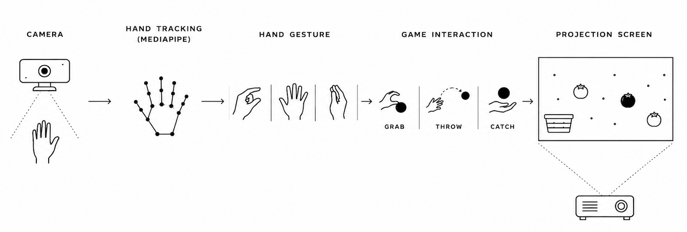

ReHand is an interactive rehabilitation experience that transforms hand therapy into play. Using motion tracking and projection, the same gestures required for recovery become the core mechanics of the game, making repetition feel natural, engaging, and rewarding.
01 / 04
The problem
People living with conditions such as arthritis and Parkinson's often rely on repetitive hand exercises to maintain mobility and flexibility. Traditional routines can feel monotonous and offer little feedback or sense of progress, making it hard to stay motivated over time.
02 / 04
Movement first
The interaction was designed around rehabilitation movements first, with gameplay built around them. Gripping and pinching became the foundation of every interaction, so each action in the game supports the intended exercise.
A personal-best scoring system turns every repetition into a measurable achievement instead of just another exercise.
03 / 04

How it works
A projector displays the game while a camera tracks hand movements in real time using MediaPipe. Each gesture is translated directly into gameplay, with nothing to hold or wear.
Projection was chosen so the experience works in open, public spaces, not only in a dedicated rehabilitation setup.
04 / 04
Outcome
Rather than a conventional rehabilitation tool, ReHand is an experience people genuinely enjoy using. It shows how interaction design can encourage repetition through intrinsic motivation, turning a routine obligation into something people want to come back to.